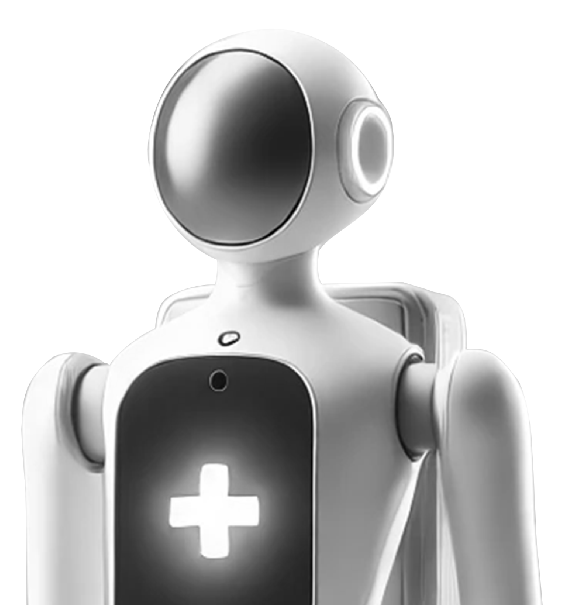

AI 기술과 인간 중심 디자인을 융합한 혁신 제품을 개발합니다.
사람의 삶을 더 편리하고 풍요롭게 하는 최고의 경험을 제공하며,
틀을 깨는 창의적 아이디어로 세상에 없는 새 가치를 창조합니다.
사회의 다양한 요구에 부응하고 인류의 지속적 발전에 기여하려 합니다.
iSol - AI:Robot 특성화 기업
“AI로 태어나고, 로봇으로 성장하며, 인간과 공존한다.”
끊임없는 도전
iSol은 AI 기술로 태동하였습니다. 2020 년에 설립된, 우리 회사는
AI 기반 Machine Vision을 시작으로 AI 원천 기술을 축적하고
Robot 개발에 많은 경험과 성과를 거두었습니다. 그러나 기술적
가치만을 기준으로 삼지 않고 인간 친화적인 제품을 제작하고
사람을 이롭게 하는 것이 목표입니다.
사람에게 도움을 주기 위해
노력하는 기업
iSol(아이솔) 프로젝트는 대부분 쉽지 않았습니다. 때로는 기술적
난제를 해결해야 했고 때로는 다양한 이해적 불균형을 해소해야
했습니다. 프로젝트의 해결은 기술만 있어서는 가능하지 않기
때문에, 사람을 이해하고 사람과 소통하고 사람에게 맞춰져야
한다고 믿습니다.
01AI와 로봇의 융합 솔루션
AI와 로봇 융합 기술로 가정과
현장의 미래를 바꾸고 있습니다.
AI기술 R&D
iSol은 단순한 자동화가 아닌 인간의 삶을 더 깊이 이해하고
보살피는 AI 연구개발에 힘쓰고 있습니다. 사람의 목소리,
작은 동작, 미묘한 표정까지 세밀하게 감지할 수 있는
인공지능 알고리즘을 통해 환자의 상태를 정밀하게
파악하고, 돌봄 상황에 즉각적으로 대응할 수 있는 기반을
마련합니다.
이러한 기술은 단순히 데이터를 처리하는 차원을 넘어, 인간
중심의 돌봄 로봇이 되기 위한 두뇌 역할을 합니다. iSol의
AI R&D는 의료, 간호, 생활 지원 등 다양한 분야에서 활용
가능한 핵심 기술로 발전하고 있으며, 앞으로도 더
지능적이고 따뜻한 로봇을 구현 하기 위해 연구를
이어갑니다.
현장의 최적화된 로봇 연구개발
iSol은 연구실 속 이론에 머무르지 않고 실제 현장에서
필요로 하는 솔루션을 찾는 데 집중 합니다.
간호 로봇은 환자의 이동, 기본 간호 지원, 환자 안전
모니터링 등을 수행하며 의료진의 업무 부담을 덜어줍니다.
또한 비침습 혈당 측정 장치는 환자의 불편함을 줄이고 건강
데이터를 보다 안전하고 정확하게 제공합니다. 가정이나
요양 시설에서 활용되는 돌봄 로봇은 고령자나 장애인의
일상생활을 지원하며, 자립적인 생활을 돕습니다.
iSol은 이렇게 현장의 목소리를 반영한 맞춤형 로봇을 통해
안전성과 신뢰성을 확보하며, 사용자와 가장 가까운 곳 에서
함께하는 로봇을 만들어갑니다.
다양한 산업에 맞는 AI로봇 연구개발
iSol은 AI와 로봇의 융합으로 의료와 돌봄의 미래를 새롭게
열어가고 있습니다. 우리는 기술이 인간의 삶을 대체하는
것이 아니라, 더 깊이 이해하고 함께하는 동반자가 되어야
한다고 믿습니다.
환자와 가족, 의료진이 겪는 어려움을 기술로 공감하며
해결하는 것, 그리고 더 안전하고 존중받는 돌봄 환경을
만드는 것이 우리의 목표입니다. iSol은 병원과 가정,
그리고 사회 전반에서 모두가 안심할 수 있는 헬스케어
환경을 구현하며, 인간 중심의 따뜻한 혁신을 실현하는
미래를 지향합니다.
02AI로봇
돌봄 서비스
노인과 어린이에게 돌봄
서비스를 제공합니다.
모듈형 로봇 기술
iSol의 돌봄 로봇은 모듈형 구조를 기반으로 다양한 환경과
요구에 유연하게 대응.
각 기능 모듈은 돌봄, 모니터링, 이동 지원 등 상황에 맞게
조합되어 사용자의 필요에 최적화된 도움을 제공. 이러한
모듈형 기술은 유지 보수와 확장이 용이해, 지속 가능한
돌봄 혁신을 가능하게 함.
노인을 위한 돌봄 로봇
iSol의 돌봄 로봇은 노인의 일상을 지키는 든든한 동반자
역할을 함. 복약 시간과 용량을 정확히 안내하고, 음성
인식과 영상 통화를 통해 가족이나 돌봄 인력과 자연스럽게
소통할 수 있음.
또한 실시간으로 움직임과 이상상황을 감지해 방범 및
안전을 지원. 이러한 통합형 AI 돌봄 로봇은 노인의 자립을
돕고, 가족에게는 안심을, 사회에는 지속 가능한 돌봄의
미래를 제시.
어린이를 위한 놀이 교육 서비스
iSol의 돌봄 로봇은 어린이의 하루를 함께하는 스마트한
친구역할을 함. 학습 콘텐츠와 놀이를 결합해 자연스러운
교육 환경을 만들고, 음성 인식과 표정 분석을 통해 아이의
정서를 이해 하며 따뜻한 대화를 나눔. 또한 위험한 상황
이나 이상 행동을 실시간으로 감지해 보호자 에게 알림을
보내 안전을 지킴.
iSol은 기술을 통해 아이의 성장을 돕고, 부모 에게는
믿음을 주는 새로운 형태의 돌봄을 제시함.
03AI로봇
간호 서비스
AI로봇이 의료 현장에서 간호사를
도와 간호 업무를 수행하고 업무의
효율성을 높여드립니다.
영상과 음성으로 일상을 이해하는 간호 서비스 지원 로봇
플랫폼
인력이 부족한 간호 업무를 간호사와 같이 자연스럽게
수행하기 위해서는 사물과 환경을 이해하고, 언어와 행동에
대한 이해가 가능한 인공지능 기반의 세미 휴머노이드
로봇.
시각적 데이터(Vision), 언어(Language), 행동(Action)을
통합적으로 처리할 수 있는 생성형 AI를 탑재하여 복잡하고
동적인 환경에서의 자율성과 적응력을 극대화.
의약품 전달, 의료기기 수치 판단, 환자 상태 모니터링과
환자 정서 안정 등의 업무를 수행.
병원에서의 인간과의 상호작용 작업수행
병원 환경에서 약물 전달, 환자 상태 모니터링, 의료진
지원와 같은 간호 지원 역할 수행을 목적으로 병실, 복도,
진료실 등 병원의 동적이고 제한된 공간의 사용 환경에서
단순 이동 작업부터 정밀한 물체 조작, 인간과의 상호작용의
작업범위를 수행.
간호지원 역할 수행을 위해 상체는 인간과 유사한 형태(팔,
머리, 디지털 얼굴 등)를 가지며, 하체는 이동성과 안정성을
위해 바퀴 기반으로 구성.
약물 전달, 환자 모니터링, 의료진과 상호작용을 위해
정밀한 작업 수행을 위한 로봇 팔, 병실 내 물체 탐지와
환자 상태 모니터링을 위한 카메라와 센서, 음성 명령
인식을 위한 마이크와 스피커로 하드웨어를 구성.
생성형 AI 기반의 휴먼-로봇 인터페이스(HRI)
생성형 AI 의 핵심인 파운데이션 모델 가운데
비전언어모델(VLM), 거대언어모델(LLM), 로봇제어모델을
기반으로 데이터 그라운딩을 수행하여 병원에서 간호 지원
업무를 수행할 수 있는 모델 생성.
생성형 AI 모델과 하드웨어 간의 흐름은 의료인의 언어
명령을 받은 LLM이 명령을 해석하고, VLM에게 시간 정보를
요청하여 받은 결과를 기반으로 로봇제어모델에게 상위레벨
명령인 동작을 지시하면 로봇제어모델에서는 로봇하드웨어에
제어명령을 내려 동작을 수행한 후에 카메라와 마이크로
상태와 센서 피드백을 통해 명령 완수 여부를 확인하고
LLM/VLM이 상황 변화를 파악하고 재지시를 시행함.

04AI의료로봇 (가정+병원)
가정이나 병원에서 사용할 수 있는 비침습 ai
혈당측정장치를 개발하여 누구나 쉽게 혈당을
측정할 수 있는 새로운 방법을 제시합니다.
당뇨병 환자를 위한 AI 비침습 혈당 관리 솔루션
채혈에 따른 통증이 없고 바늘이 삽입되지 않아 감염
위험성이 없는 비침습 혈당계와 혈당관리 및 관련 정보를
제공하는 모바일 앱을 통해 비침습 혈당 측정 서비스를
제공.
근적외선 분광기술과 최적의 인공지능 기술을 기반으로
최적의 혈당 추론 기술을 개발.
대구 보훈병원에서 1,000명이상의 당뇨환자들의 30,000개
이상의 혈당 데이터셋을 수집하여 다양한 인공지능 기법을
통해 학습한 혈당 추론 모델 생성.
사용자의 휴대성과 편의성을 고려한 콤팩트한
디자인
근적외선 스펙트럼은 유기물질들에 함유된 수소, 산소,
탄소들의 결합에 의한 복잡한 스펙트럼이 나타나는 영역으로
혈당을 측정하기 위해 물 흡수가 적고 측정 신호의 에너지가
상대적으로 높은 780-1050nm의 파장을 선택하여 스펙트럼
측정.
근적외선은 빛의 95% 정도까지 피부 각질층과 표피를
통과하여 피부 색소의 영향을 받지 않고도 혈중 농도가 높은
지역에 도달하기 때문에 근적외선 파장을 발광부에 적용하고
글루코스(C6H12O6)에 흡수/반사된 스펙트럼을 측정.
AI를 적용한 소형화 기술의 한계를 넘다
AI 기반 소형화 기술을 적용한 미니 혈당계는 기존 혈당
측정의 한계를 극복한 혁신적 기기입니다. 바늘 삽입이나
채혈 과정이 전혀 필요 없는 비침습 방식으로 혈당을
측정하여 사용자가 느끼는 통증과 감염 위험을 원천적으로
차단합니다.
또한 전용 모바일 앱과 연동되어 혈당 수치를 실시간 확인할
수 있을 뿐만 아니라, 개인별 맞춤형 혈당 관리 솔루션과
다양한 건강 관련 정보를 제공합니다. 이를 통해 사용자는
보다 편리하고 안전하게 혈당을 관리하며 건강한 생활을
유지할 수 있습니다.

 끊임없는 도전
끊임없는 도전 사람에게 도움을 주기 위해
사람에게 도움을 주기 위해
 02AI로봇
02AI로봇
 03AI로봇
03AI로봇